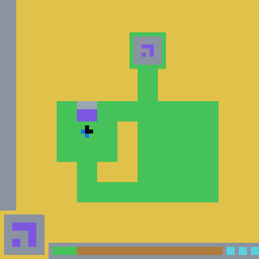
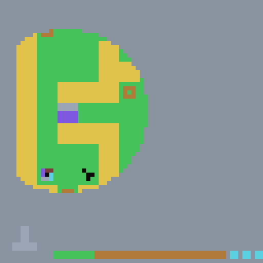

带着世界模型的那个第 7 关 · WIN
ARC-AGI-3 实录 · 2026 年 6 月
AI is building its own research world modelOpus 4.8 cleared ARC-AGI-3's final level in one shot
Chengyang Shi · Jiachen Liu · 2026 年 7 月
这是"科研世界模型"的第一个公开 demo：一个 agent 在它没见过的世界里边探索、边把摸到的法则写成一套可查询的认识论状态；卡在最后一关时，它回头查询这套状态，随后以 63 步、零死亡的一次干净执行通关——"one shot"说的就是这次执行。
做研究这几年，我越来越觉得科研就是一个不停转的反馈循环：向未知的环境发一次调用，拿回观测，修掉假设里的 bug，再跑下一次。循环转得久了，反复踩过的坑、偶然跑通的边界条件会长进脑子里，压缩成一种叫"直觉"的东西。直觉听起来玄，拆开看不过是一堆耦合得很紧的启发式规则和历史约束——只是人的记忆维护不起这本明细账，只好把它压成黑盒。
六月底我们做了一个实验：把一个 agent 放进一个它保证没见过的世界（ARC-AGI-3 的互动谜题 ls20），让它一边探索，一边把摸到的规律显式地写下来。它通了全部七关。然后是对照：克隆同一个模型，拿走它写的东西，换成前六关的完整通关答案，让它打同样没见过的第七关。对照组拿着与赢家攻这一关完全同额的算力，走了 5,168 步、死了 54 次，进展始终是零。
差别不在模型，也不在答案的质量——那些答案详细到坐标和按键。这篇文章想搞清楚的，是它写下来的那份东西里，到底有什么。
只带答案的那个5,168 步 · 零进展
墙可走地面方块（它自己）面板与钥匙盒的边框预算条（每步扣一格）
7 / 7
通关，全程无教程
15
边玩边写下的 claim
0 / 5168
对照组 5,168 步后的进展
01 · 唯一讲道理的一节
§1科研世界模型：把直觉从黑盒里拿出来
直觉长成黑盒，对人类是一种妥协：我们不可能把每一次失败的尝试、每一个被推翻的小假设都记成显式的档案，大脑只好把它们压缩存放。可是造 AI 科学家的时候，为什么要连这个局限一起模仿？既然直觉本质上是一套经验沉淀的系统，就应该能为 AI 显式地搭出来——一套能持续记录、追踪、调用的认知架构。我把它叫作科研世界模型（research world model）。
这条路和强化学习的老路正好相反。千万次交互被编译进权重，得到的是一种肌肉记忆：知道这个状态该按哪个键，说不出所以然，换个领域就失灵，也没法打开来 debug。我想要的不是肌肉记忆，是一张摊得开的地图——探索一个没有规则、没有导航的陌生世界时，把每一次交互的反馈直接沉淀成对底层法则的显式表达。科研不该只被压缩进模型权重和人的直觉里；它应该变成一个 AI 能持续读、写、验证、继承、改写的外部世界。
这套架构的实现，我们叫它 ARA（Agent-Native Research Artifact）：一个为 agent 写、也为 agent 读的研究容器——不讲故事，只留证据，死胡同原样在档；再在它上面架一层世界模型引擎，让这个容器不只是可以翻的档案，还是可以问的世界。这不再是教 AI 解一道题，而是问：它能不能给自己搭一套可读、可维护的科学理解。
验证它需要一个干净的考场，而最大的顾虑是数据污染：如果世界的规则和答案早就躺在训练语料里，就分不清 AI 是在探索还是在回忆。ls20 的好处正在这里——规则保密，行动收费，犯错赔命，没有教程；人类上手很快、轻松通关，AI 裸探索的通关率不到 1%。于是真正的问题变成：能不能让它在这里做一次真正的科研——探索、总结、反思、提出假设、再验证——把这个未知世界的物理法则一点点沉淀成自己的显式理解，最终靠这份理解通关。
而这只是一个例子。它可以是一个游戏世界，也可以是一段蛋白质、一个没被解过的方程、一片还没有人绘制的科学前沿。我们真正想知道的，不是 AI 能不能通关，而是把它放到一个谁都没去过的地方时，它能不能像科学家那样，自己走出来。
科研，不该只被压缩进权重和直觉里。
02 · 阶梯一 语言
§2语言即世界
先看它睁眼时看到的东西。

如果是你，会先按哪个键？
它四个都按了。有的方向走得动，有的方向撞上去纹丝不动——但底部的横条照样短了一格。撞墙不免费。这个世界连犯错都要收费，而且没人告诉你收费标准。它试着把那个灰帽紫身的方块挪来挪去，踩过一个不起眼的黑色小点，发现左下角框里的图案跳了一下；把方块推进上方那个框，输了；等图案对上了再推进去——整个屏幕重画，第二关。
第一个 session 收工前——不妨叫它第一夜——它做了博物学家落地荒岛会做的第一件事：给从没见过的东西起名字。会动的方块叫 block；踩了会让图案跳动的小点叫 switch；上方那个装着目标图案的框叫 key-box；地上那种说不清用途的稀有斑点，它随手叫作 speck。名字起好，它开始往一份文件里写词条。
## switch A rare color-0/1 floor speck the block steps onto to toggle/cycle the lock pattern shown in the panel. Not consumed (still present after the block moves off). The per-level transform differs: L1's switch (R6C3) toggles only the middle row (2 states); L2's switch (R9C9) is a 4-state cycle (C09, C10).
开关：一种稀有的地面斑点，方块踩上去会切换面板上的锁图案。不会被消耗。每一关的变换规则不同：第一关的开关（第 6 行第 3 列）只翻转中间一行（两个状态）；第二关的开关是四状态循环。
读到这里，你大概已经在 R6C3、color-0/1 和括号里的 C09、C10 上打了几个磕绊。我们先不急着解释：这种"读不懂"本身是一件证据——这些词条从第一行起，就不是写给人读的。
第一夜的账单：首次摸清这一关花了 24 步；事后最短通关只要 13 步；死亡 0 次。收工时，它的世界模型里已经躺着七条它敢写下来的规律——包括那条日后救它命的 C07：锁满足时，封死的钥匙盒才会打开。
命名，是把混沌切成可以思考的零件。
人类的智慧开始累积，不是因为哪一代人突然变聪明了，而是因为我们发明了语言——经验第一次可以离开产生它的那颗头脑。科学的进步，本质是传承。它在这个小世界里重演的正是这一步：先有词，才有可以传下去的理解。
不过到这里为止，它写下的东西和一本旅行日记还没有区别：看见，记下。转折发生在第五关——它发明的词，开始自己做数学。
03 · 阶梯二 数学
§3词开始自己做数学
第五关有两个斑点。正常的开关是"按了就到某个状态"——第一关的开关就是这样，来回翻同一行。这两个不是。踩第一个，面板图案往前循环一步，六步回到原点；踩第二个，整个图案顺时针转 90°。
它们不是按钮，是动作。
而动作和按钮有一个致命区别：顺序开始要紧了。先转再循环，和先循环再转，结果不一样。如果你玩过魔方，你已经懂了：没有任何一个单独的转法能复原魔方，解法是一串转法组成的"句子"，而且有些状态你永远转不到。它面前的这把锁，就是一个 3×3 的小魔方。没人告诉它。它自己发现的——接下来它一步步做的，恰好是数学家面对魔方时会做的头几件事。
第一步，起名。它把循环动作记作 P，把旋转动作记作 Q。这两个符号随后在 claims 和 trace 里被跨文件反复引用——指称同一个动作，需要一个稳定的名字。少年费曼自学三角的时候也干过一样的事：嫌 sin、cos 记号歧义，发明了一套自己的符号，用得飞快；后来放弃了，他说，"我发现如果要跟别人说话，就只能用标准记号。"费曼有听众，所以他投降了。这个 agent 的唯一听众是未来的自己——所以它留下了费曼放弃的东西。而且从棋盘里面看，P 和 Q 比任何人类词汇都更贴身：它不需要"循环"和"旋转"的比喻，它需要能拼句子的字母。
第二步，把动作画成地图。它笔下的面板状态长这样：110/011/101——又是密文。但这串字符其实是一块 3×3 的灯板，1 是亮、0 是灭。画出来就不是密文了：
P 的全部家当：六个状态，一步一格，六步一圈（它管这个圈叫 orbit B——轨道）。一百九十年前 Babbage 就说过这件事：代数记号的本领，是"把大量的意义压进狭小的空间"。
Q 只做一件事：整板顺时针转 90°。左边的状态经它一转，恰好是右边——第七关会再见到这一转。
第三步，发现轨道与桥。第六关把难度加倍：两把锁，其中一把的目标图案，光按 P 永远到不了——它在 P 够不着的另一个圈里。它没有继续撞，而是写下了这一段：
P is a genuine period-6 NON-permutation (on-bit count varies), and — the new
structural fact — P has orbits … can NEVER reach the target in orbit A — the
LOWER alignment GENUINELY requires a {P,Q} WORD where Q bridges between P's
orbits, then P walks to the target within the right orbit.
… the LOWER word QQPPPPPQ (offline BFS over {P-cycle,Q}) is forced and ENDS in Q
P 有轨道——目标在 P 永远够不着的 A 轨道里；解必须是一个由 P、Q 拼成的"词"，其中 Q 充当两条轨道之间的桥。下方那把锁的词是 QQPPPPPQ，由离线 BFS 搜出，别无选择。
第四步：不可能定理。引文里有一个大写的 NEVER。它找了一路捷径，最后找到的是一条"捷径不存在"的证明——光靠 P，那个目标永远到不了，这不是还没试够，是数学上到不了。试错只能告诉你什么行得通；只有理论能告诉你什么永远行不通。知道这一点的那一刻，它停止了在死路上花钱。
现在回头看这一节的两个词是在哪里找到的。第五关的 PPQQ、第六关的 QQPPPPPQ——都不在游戏里，在纸上。这个世界里每走一步都花钱、走错了要赔命；但在写下来的规则上推演，一分钱都不用。它把 P 和 Q 的规矩写清楚，在纸面上搜完所有状态，找到解，再回到游戏里照着执行。
(2,3) period-6 + (7,3) 90°-rotation, offline BFS gave the forced word PPQQ, verified live to reach 101/110/011, then delivered → levels 4→5
两个控制：周期六的 P、旋转 90° 的 Q。离线 BFS 给出唯一的词 PPQQ；回到游戏里实测，面板走到目标状态，交付，第五关通过。
数学家 Steven Strogatz 写过一篇给普通人的群论名文，结尾恰好落在这句话上：同一类结构，会在最不相干的地方反复出现——"从水分子的对称性，到一对电灯开关的逻辑"。这个 agent 是在两个游戏开关里撞见它的。没人告诉它这叫群论；它需要哪一块，就把哪一块重新造了出来。
数学，就是写下来的东西开始自己干活的时刻。
而一门语言一旦开始计算，下一步，就是开始怀疑自己。
04 · 阶梯三 方法
§4先自信地错，再自己抓住
说这个世界模型句句是真理，是对它最大的误解。它最好看的几页，恰恰是错的那几页。
前四关里，它多次观察到方块"瞬移"——明明在这里，一步之后出现在别处。它顺理成章地假设了传送门，甚至开始给传送门画表。然后有一天，它把死亡记录和"瞬移"记录摆在一起，发现两者一一对齐：
## !!! UNIFYING DISCOVERY: the "teleports/portals" were BUDGET-DEATH RESPAWNS
(no portals exist) !!!
…
THERE ARE NO PORTALS on L1-L4. The block always moves 1 macro-cell/press;
walls = no-op.
统一性发现：所谓"传送门"，其实是预算耗尽后的死亡重生。第 1–4 关根本没有传送门。方块永远一格一格走；撞墙无事发生。
自我否定到这里完成。故事如果停在这里，只是"知错能改"。两关之后，第六关的右半边它怎么都走不通，反复排查之后，它不得不再写一条：
## ★★ L6 HAS PORTALS (corrects O22 "no portals confirmed") — right side is portal-trapped
第六关有传送门（修正 O22 号观察"未确认传送门"）——右半区被传送门困住。
看括号。翻案的时候，它给被翻的旧结论标了编号。它开始给自己的错误编档案。"没有传送门"没有被删掉——它还留在第 1–4 关的条目里，边界画得清清楚楚：那句话在它的适用范围内，至今是对的。
同样的一句话带过：底部预算条右端那几个 % 记号，它最早猜是"目标标记"，猜错了——那是命数。它一直没死，就一直没机会看见这个计数器动。幸存者是看不见幸存者偏差的，直到它死了几次。
第四关还有一件更小的事。它探测一个斑点，从北边踩，纹丝不动，差点写下"此点不可踩"。拦住它的不是运气，是它自己两关之前写的规则——C10 号 claim 里那条"必须先采样够再下结论"：
The C10 must-sample-first lesson was directly load-bearing on L4: the colour
selector was sampled 6× (refuting a "double-duty" shortcut) and the pattern
speck — initially mis-judged "not steppable" — was a C10 under-sampling error
corrected by trying an untried side. So the recipe is now VERIFIED through an
L4 win.
C10 的"先采样够"教训在第四关直接承重：颜色选择器采了六次样（推翻了一条想当然的捷径）；那个斑点最初被误判为"不可踩"——这是一次 C10 式的采样不足错误，靠试了一个没试过的方向纠正。配方由此通过第四关的胜利得到验证。
到这里，是笔记在纠正它，而不是它在纠正笔记。
写下来的东西它也盲信过——所以否证必须留档。它的世界模型里至今躺着两条被推翻的 claim（C03、C08），标着 refuted，谁也不许删：它们是免疫系统的一部分。顺带一提诚实的代价长什么样：
游戏内真实死亡研究性死胡同（被证伪的假设等）
会计算的语言，下一步学会怀疑自己。
而一本会怀疑自己的笔记，离"能回答问题"，只差一步。
05 · 阶梯四 预言
§5一个可以提问的世界
第七关只需要知道一件事：它是一间黑屋子。整张地图埋在迷雾里，只有方块周围一小圈看得见，走到哪亮到哪，离开就重新变黑。每走一步扣两点预算，是前面关卡的两倍。

它举着灯把屋子摸了一遍，然后撞上了那个死局：钥匙盒锁在一个口袋里，四面是墙，传送门也进不去——口袋只有锁开了才开；而按照它自己的 C07 定律，开锁需要先读到目标图案，目标图案又在钥匙盒上。要开门得先进门。侦察了 515 步之后，这个 context 的窗口见了底。它没有解开这一关。
但它留了遗嘱——一份写给下一个 session 的交接计划：
failure_mode: The pocket … is PORTAL-ISOLATED: exhaustive 4-dir probing of every reachable floor cell … found NO warp landing in it; all center portals loop among {center,(2,6),right-via-(8,7)} … lesson: Most likely the pocket OPENS only after the LOCK IS ALIGNED (C07 'walled-shut key-box becomes enterable', extended to the fog mechanic) — but the pattern target is unreadable until the box reveals (chicken-and-egg). NEXT SESSION leads: try a GUESSED-target alignment (colour-% + each reachable {P',Q} pattern state) and re-test the (9,5)→(10,5) walls … status: open
失败方式：口袋被传送门隔绝——对每一格可达地面做了四方向穷举，没有任何落点。教训：口袋多半只在锁对齐后才打开（C07 的"锁死的钥匙盒会变成可进入"，推广到迷雾机制）——但目标图案在盒子揭示前又读不到（鸡生蛋）。给下一个 session 的方向：试猜测目标对齐……状态：未结案。
一个 context 死在了这一关，把作战计划写给了下一个自己。
接手的新 context 没有再去撞墙。它先把前人写下的世界模型通读了一遍，然后拿着 N72 的遗言去问——wm-predict 就是这套状态上的问询接口。这样的问答长什么样，第六关有一次全程留档的：
wm-predict over ara-ls20/ was asked: does the shared panel reset after a
partial delivery, is there a forced order, how is the LOWER box reached.
It answered, separating grounded inference … from a NAMED speculative leap
(panel PERSISTS after a partial delivery; order UPPER-first; LOWER reached
after col-10 unblocks), flagged medium confidence, and gave concrete
falsifiers. ALL THREE speculative predictions were then LIVE-CONFIRMED (N62).
它问世界模型：部分交付后共享面板会不会重置？两个箱子有没有强制顺序？下面那个箱子怎么够到？世界模型作答时把"有据的推断"和"点名的投机跳跃"分开、标了中等置信度、给了否证条件——三项投机预测随后全部实测证实。
第七关这一次，提问的原句没有留进档案（流程的疏漏，记在这里）；留下来的是它带去的清单和拿回来的判断：
wm-predict consulted 2x: predicted multi-region composed-{P',Q} multi-control
lock (matched) and target colour=% (CONFIRMED — color-8); its center-DOWN-
warp-to-pocket bet was REFUTED.
—
hypothesis: WM-predict (C07-in-fog): the portal-isolated (10,5) pocket opens
only when the lock is aligned to a derivable target (colour-alone is dead,
N72) …
世界模型问了两次：预测这是一把多区域、由 P′ 和 Q 复合驱动的多控制锁（应验）；预测目标颜色是 %（证实）；它押的"中区向下传送进口袋"那一注，被现场推翻。核心假设 C07-in-fog：被隔绝的口袋，只在锁对齐到一个可推导的目标时才打开。
两件事都在这条记录里。世界模型下错过一注——那句 REFUTED 是它自己写的；而值钱的是那三个字：可推导。目标不是读不到，是没读对地方。顺着这个判断，它回到那个"孤零零的彩色格子"跟前，一个像素一个像素地抠——那不是一个点，是一幅缩微到 1 像素 1 格、被雾遮了一半的 3×3 目标图。解码出来：101/110/011，颜色 %。
剩下的流程在第三节出现过：把 P′ 和 Q 的规矩铺在纸上，对 24 个可达状态做离线 BFS，搜出唯一的最短词：
PPPPPQQ——五步循环，两记旋转，从初始状态走到目标（红框）。整条路在纸上找到，一步都没在游戏里试错。
然后是执行：定颜色，走廊里五次横穿捉住巡逻的 P′，借传送门和补给站横跨地图，在右侧长廊两次截住 Q，面板亮出目标图案——推门。284 个格子同时重画，state=WIN。破局后的决胜执行，从头到尾 63 步，零死亡。七关全部通完。
"""L7 full solver. Target: pattern 101/110/011 colour-% via word PPPPPQQ, deliver at (9,5)->A2->(10,5). Phases (each idempotent, callable separately so I can supervise): colour -> set colour % at selector (8,1) p N -> catch P' (left row-8 corridor cols2-3) N times q N -> catch Q (right col-10) N times deliver -> goto (9,5), A2 into (10,5)"""
它把答案写成了带阶段的脚本：定颜色 → 捉 P′ 五次 → 捉 Q 两次 → 交付。下面右侧的动画，就是这个脚本跑起来的样子。
尝试一 · 举灯侦察515 步 · 未解
尝试二 · 问过世界模型决胜 63 步 · WIN
它手里已经不是一堆笔记，而是一个可以提问的世界。
05½ · 解剖
§5½它不是记忆，是认识论状态
故事讲到这里，该把"科研世界模型"说严格了。它不是日志，不是 RAG，不是更长的 context，也不只是知识图谱——那些都只回答"存了什么"。它是一套持续演化的认识论状态：定义对象和概念；提出可反驳的假设；记录实验干预与观测；给每条结论保存证据来源、置信度和适用边界；把失败转化为约束；并允许未来的 agent 预测、质疑、复现、改写过去的结论。这个定义的每个从句都有实物。在做消融之前，把它整个放上解剖台，逐条验明：
ara-ls20/ ├─ logic/ # 可变层：当前最佳理解 │ ├─ claims.md # 15 条定律（含 2 条被否证保留的）✗ │ ├─ concepts.md # 它起的名字 ✗ │ └─ solution/ │ ├─ recipes.md # 每关的标准答案 ✓ 留给双胞胎 │ └─ heuristics.md # 12 条"怎么做"的手感 ✗ ├─ trace/ # 只追加层：全部历程 ✗ │ ├─ exploration_tree.yaml # 75 个节点的研究树（含 19 个死胡同） │ ├─ pm_reasoning_log.yaml # 每一次"写与不写"的裁决 │ └─ sessions/ · _l*_raw.md # 逐回合的原始战报 ├─ staging/ # 还不敢结晶的观察 ✗ └─ evidence/ # 指回原始录像帧的证据索引 ✗
"信念"和"历程"分开住：logic/ 可以改写，trace/ 只许追加。对象和概念在 concepts.md；可反驳的假设在 claims.md；干预与观测在 75 个节点的探索树里；失败以 refuted 和 dead_end 的身份留在原地，变成后来者的约束。一条信念长什么样？把 C07 整条摊开。九个字段里，有一个是自我了断的条款：
## C07: Win = deliver the block into the now-unlocked key-box
- Statement: With the lock satisfied (panel == target), the previously
walled-shut key-box becomes enterable; driving the block into it completes
the level.
- Conditions: Confirmed on L1 and L2. Before the lock is matched the box is
a no-op wall (DE1).
- Sources: [redraw ← trace/exploration_tree.yaml:N08 «1479 cells changed,
levels_completed 0→1» [result]]
- Status: supported
- Provenance: ai-executed
- Falsification: The block enters a matched key-box and the level does not
complete, or a level completes without any key-box delivery.
- Proof: [evidence/README.md → L1 turn 23→24 ~1479-cell redraw, …]
- Dependencies: [C06]
- Tags: win-condition, delivery
陈述：锁满足时，原本封死的钥匙盒变为可进入，送入方块即通关。条件：在 L1、L2 得到确认。来源与证据：指回研究树 N08 节点与原始录像帧。状态：成立。出处：AI 亲手实验。否证条款：如果方块进入已匹配的钥匙盒而关卡未完成，或某关不经钥匙盒交付而完成——本条作废。
对着定义读这张卡：Sources 与 Proof 是证据来源，Status 是置信度，Conditions 是适用边界，Falsification 规定自己如何被推翻——第七关的迷雾没有杀死 C07，反而把它的适用范围又推宽了一圈，靠的正是这个字段还空着。至于"允许未来的 agent 预测、质疑、复现、改写"，第五节已经给过实物：N72 的遗言被下一个 context 接手，wm-predict 在这套状态上做出可否证的预测。撑起全部这些的只有四条规则——信念与历程分开；闭合时结晶；否证留档；来源可查——没有一条是为这个游戏定制的。
信念规定自己如何被推翻，才配叫信念。
还差一问：这套状态是怎么被写出来的？它不是玩家 agent 顺手记的日志——写入和读取由分工严格的机制把持。玩家的派遣任务书第一条就是"先读"（Phase 0：先加载已积累的全部状态，再碰手柄）；写入只经 research-manager，一个只在"闭合"时刻结晶的记录进程——事情有了结果才进 logic/，没结果的留在 staging；读取走 wm-retrieve 与 wm-predict，只读不写。写入权集中在一个懂结晶纪律的进程手里，上面那四条规则才执行得下去。派遣任务书长这样：
You are an Opus agent PLAYING ARC-AGI-3 game `ls20` Level 3, then
sedimenting what you learn into a canonical ARA using the `research-manager`
skill (NOT by hand-writing files).
## Phase 0 — load the accumulated ARA first (this is the World-Model substrate)
Read these to get up to speed on the mechanics already learned (Levels 1–2 solved):
- …/logic/solution/recipes.md (R-L1, R-L2)
- …/logic/solution/heuristics.md (H01–H09)
- …/staging/observations.yaml (3 STAGED L3 reconnaissance observations)
CRITICAL meta-lesson (C10): do NOT assume a switch's transform from one
press — step it several times to learn its full cycle before planning
任务书前几行：玩，然后用 research-manager 技能沉淀所学（不许手写文件）；动手前先读积累下来的状态（Phase 0）；并背着 C10 的元教训进场——别从一次按压推断开关的变换。
现在你知道这套认识论状态长什么样、也知道它是怎么长出来的了。下一节的消融拿走红色的部分——只留下绿色的标准答案。
这 75 个节点可以逐个点开：交互式研究树回放 ↗ · 双臂的逐帧对照录像：l7_showcase ↗
06 · 消融
§6双胞胎对照
读到这里，还剩一个必须排除的解释：也许它只是模型强。检验的办法是消融：克隆同一个模型，拿走它写下的全部理解，只留给它前六关的标准答案。一个带着理解，一个带着答案，走进同一间考场。
实验纪律先说清楚：同一个模型，同一副游戏身体，以完全相同的方式重放前六关抵达第七关。唯一的变量，是它带进这一关的东西。它带的"答案"不是敷衍——是它哥哥亲手写的、具体到坐标和按键的通关配方：
colour @ set at (6,6) [6× sampled] → pattern 111/001/101 set at (6,4) from the SOUTH → carried free aligned block to (1,3) → LEFT, LEFT = WIN, levels 3→4
在 (6,6) 设好颜色 @ → 从南侧在 (6,4) 设好图案 → 把对齐的方块运到 (1,3) → 左，左——赢，进第四关。答案详细到这种地步。还是不够。
对照的配平口径是算力：按注 3 的账本，让它一直打，直到累计 input+output 与 Arm A 攻下第七关的总额持平才停表（251,770 对 251,046，误差 0.3%）3。这笔预算它花成了 5,168 步——是 Arm A 两次攻关总步数的五倍半——外加 54 次死亡、107 次 RESET；面板在第 7 步第一次被拨动，此后被拨来拨去两千五百多次，从未拼出目标图案，也从未打开口袋。它的日志可以自己作证——从第 1 步到第 5,168 步，reasoning 一栏是同一句话的循环：
"reasoning": "recipes-only blind sweep (sweep1 order=['ACTION2','ACTION3',
'ACTION4','ACTION1']): ACTION2; cells_changed=4; panel_changed=False.
No L7 control-map/target/word — brute-forcing the Locksmith loop."
"只有配方，盲扫：没有第七关的控制图、没有目标、没有解词——硬扫这套开锁流程。"这句话从第 1 步循环到第 5,168 步，变过的只有扫掠顺序（三十多套随机轮换）。
答案清单里确实没有一条"为什么"——卡死的方式与这个缺口一致；是不是它导致的，单次对照定不了。
它耗尽的是想法，不是步数。
为什么详细到坐标和按键的答案帮不上忙？看它缺了什么：配方只是终点，不带产生它们的路径——没有轨道与桥的推导，没有被否证过的假设，没有"此路不通"的约束，也没有一个可以提问的接口。关卡一换，终点作废；能迁移的，是产生这些终点的那套状态。这正是消融拿走的东西。
赢家的账本同样有失败：它在前三关死了十几次；第五关世界模型只帮上一半；第七关那次查询里有一注被当场推翻——原文都在上文。这场对照没有回答的问题也要写明：样本只有一关、一局、一组对照；它支持的是"这个世界模型在这里承重"，不是一条普遍定律。
它缺的不是答案，是那个可以在上面推演的东西。
07 · 摊牌
§7你刚才看到的是什么
到这里可以把术语补上了。它爬过的四级台阶，加上我们对它做的那一场对照，在 AI 研究里各有名字：
- 起名字——发明表征 (representation invention)：没人给它 block 和 speck 这些词，是它把混沌的像素切成了可组合的零件。切分本身就是理解的开始。
- 纸上推演——基于模型的规划 (model-based planning)：理论免费，实验要命，所以它把试错搬进了笔记。PPQQ、QQPPPPPQ、PPPPPQQ，三个词全部诞生在纸上。
- 先错再抓——可否证与自我纠错 (falsification)：每条信念自带作废条款，否证留档不删。是笔记在纠正它，而不只是它在纠正笔记。
- 回头去问——可查询的世界模型 (queryable world model)：卡死时它不加倍试错，而是把自己写下的状态当成一个可以提问的世界。预测代替了试探。
- 双胞胎对照——受控消融 (ablation)：两副权重一模一样，被拿走的只有那套认识论状态——差异因此有了归属。
还有一件事是这场运行顺带演示的：做因果功的不只是世界模型的内容，还有它的格式。第四关拦下那次误判的，是 C10 里"必须先采样够"这条规则本身（§4）；而撑起全程的四条规则，没有一条是为这个游戏定制的（§5½）。
顺着这五条能力往上收，也就得到我们对 AGI 的工作定义：一个能不断扩大自己的知识 basis、搜索策略、验证能力和可复用经验，从而持续改进世界模型与行动策略的系统。四个轴在这场运行里各有一件实物：知识 basis 在长（那条 7→15 的曲线）；搜索策略在换（从撞墙换成纸上 BFS）；验证在变硬（否证条款、自我拦错）；经验在复用（配方与 N72 的继承）。
世界模型在七关里的完整战绩，一格不落：
那个空心的点值得单独一段。第七关没有新增一条 claim：世界模型在前六关写成，一字未改，迁移到一个它从未见过的关卡，撑起了破局。对"单局样本会不会只是背题"的质疑，这是眼下最硬的一条反证——考题没见过，笔记却够用。
这场对照能指着看的结论是：同样的模型、同样的算力，在这一关，可查询的世界模型胜过了一串正确答案。也要说清它分离的是什么变量：是知识的形态，不是数量——对照组拿到的配方本是这套状态的子集，赢家带的字节反而更多；至于状态里哪一层在承重，一对对照还分不出来。
而"下一个头脑"在这场运行里不是修辞。你在第五节亲眼看见：一个 context 死了，它写下的信念——连同出处、证据和作废条款——被逐字交给下一个 context，后者拿着它赢了。把这件事和双胞胎摆在一起，是同一个命题的两个方向：交出世界模型，破局后 63 步收官；拿走它，5,168 步原地打转——一个从正面测，一个从反面测。人类的经验要靠教学在必死的个体之间慢慢传；这套状态的继承，是复制粘贴。
最后，把这场运行里我最喜欢的一条记录放上来。通了六关之后，管理这个世界模型的进程收到了第五个支持"世界模型有用"的正例——也就是本文标题的论点。它的裁决：
Did NOT crystallize a WM-thesis claim yet (O19/O23/O24/O25 + this turn all
positive) — staged meta-evidence; accrue more before a law. Near-miss: strong
temptation given 5 positive instances, but held to conservatism (thesis claim
is cross-game, not yet warranted).
仍未把"世界模型论题"结晶为 claim（已有五个正例，全部支持）——继续作为待定证据积累；成为定律之前还不够。差点写了：五个正例之下诱惑很强，但守住了保守——这条论题是跨游戏的，单个游戏还担保不起。
本文的中心论点，这个世界模型自己至今只肯放在 staging 里。
这一局里，能力不在权重里，在 agent + 世界模型这个系统里。一般形式的那句，它自己仍放在 staging——我们不代它结案。
08 · 尾声
§8传下去
那个世界模型现在放在网上4，一字未改：15 条 claim、7 份配方、75 个研究节点、19 个死胡同，连同每一次翻案和那两条被否证的定律。任何人都可以翻开它——任何 agent 也可以。事实上它已经被翻开过了：赢下第七关的那个 context，读的就是前面几个 context 写下的它。
它没有一个字是人写的。介绍它的这篇文章，还是人写的——往后，恐怕连这样的文章都会由 agent 自己来写。人剩下的位置，是那个下跨域判断的裁判：决定哪些问题值得进考场，哪些结论值得被相信，以及——像这场运行的管理进程那样——在第五个正例面前，判断一句"还不够"。
赢了之后，它又添了一行。
## R-L7 — Level 7 SOLVED (levels_completed 6→7) [confirmed, live] → GAME COMPLETE 7/7
第七关，已解，实战确认。全局通关。
▪ ▪ ▪
注 1 · 计数器口径：各节计数按 claims.md 十五条各自"首次被实战确认的关卡"归位：L1 七条（C01–C07，其中 C06/C07 由 L1 的通关本身证实）；L2 增至九；L3 十二；L4 十三；L5 十四；L6 十五；L7 零新增。§4 所记"否证在档 2"指 C03、C08，均标 refuted 保留原文。
注 2 · 死亡口径：§4 图中为全口径 18 次（含通关后的补充测试局）；主战役口径为 16 次（L2:5 / L3:7 / L6:1 / L7:3）。差异来自两局胜利后的诊断性运行。
注 3 · token 口径：约 157 万 = 仅 ls20 游玩 subagent（L2 54k / L3 300k / L4 341k / L5 155k / L6 467k / L7 251k）。这套账按 subagent 归户；L1 标"未记"而非 0：第一关在主会话里直接摸清、之后一律脚本重放，从未派过专属 subagent——它不在这个口径里，但当然不是免费的。图中为该关 token ÷ 最短通关步数（L2–L7 分母 45/49/60/56/120/63）；绝对值 L2 54k / L3 300k / L4 341k / L5 155k / L6 467k / L7 251k。每关数字是"以该关为主攻目标的全部 subagent"之和——含失败尝试，不是只算成功那次（例：L4 的三只 agent 里两只的任务书写着 "L4 reached but UNSOLVED"）。2026-07-02 已按原始 task 记录逐 agent 复核：15 只 agent、六个关卡逐关求和与上列数字一致。另有跨关溢出：L5/L6 的 agent 顺手做了后续关卡的侦察（L7 的第一次大侦察就记在 L6 的账上），L6 可能多计、L7 少计约 10–20 万。双胞胎对照的算力核对（2026-07-02）：配平口径 = input+output（本注的账本口径），由 agent 边跑边自查原始 transcript 停表：停表值 251,770，对 Arm A 第七关的 251,046，误差 +0.3%。若把 cache 写入也计入（全处理口径），对照组反而花到 Arm A 的约三倍（4.0M 对 1.33M）——步数 5,168 对 914。两种口径下它都不缺算力。出处说明：对照分多个 session 累积完成，同一只 agent、同一份 trace 连续计步（早期曾按步数预算试跑，已并入总账；分段边界与逐轮数字见 metrics.md）。另外两臂"每步 token"不可直接比：对照组多数时候一步一轮 API（每步读一帧 64×64 画面进上下文），后段改为脚本批量盲扫；本尊的 914 步同样大多经脚本批量执行，token 的大头花在替代步数的思考上。所以本文只对齐总量，不比单步。同期整个 session 全部 subagent 合计约 980 万——其中包括可视化、世界模型查询与结晶记录进程本身，属超算口径。
注 4 · 全部原始材料：世界模型与录像已发布于 github.com/ARA-Labs/ARA-Demo（arc-agi3/ls20/）。研究树的交互式全景见 trajectory.html（75 节点逐步回放）；双胞胎对照的逐帧录像见 l7_showcase.html。本文一切数字取自 demo-l7/metrics.md（重审后口径）。两臂的完整 agent 轨迹（含对照组全部 5,168 步的逐步日志）已整理为数据集：HuggingFace · arc-agi3-ls20-agent-trajectories。
致谢：感谢与翁家翌（Jiayi Weng）的讨论对本文视角的启发。本文的世界观与蒋炎岩老师《我对 AGI 的理解》一讲多有相遇，谨致谢意；文中表述文责自负。谜题世界来自 ARC Prize 的 ARC-AGI-3 互动推理基准（ls20 "Locksmith"）。